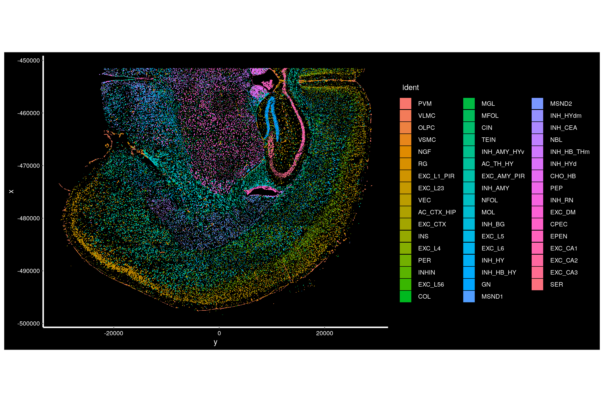
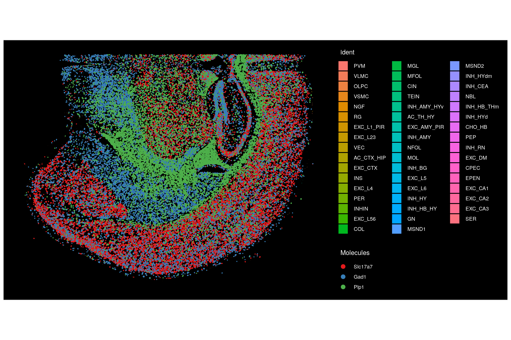
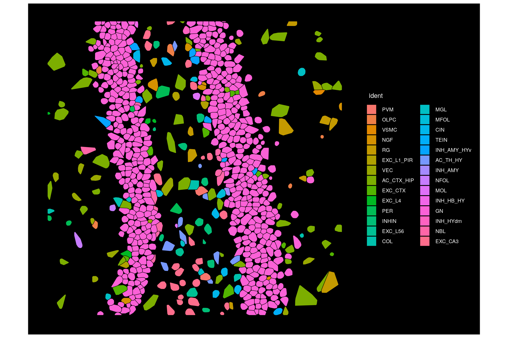
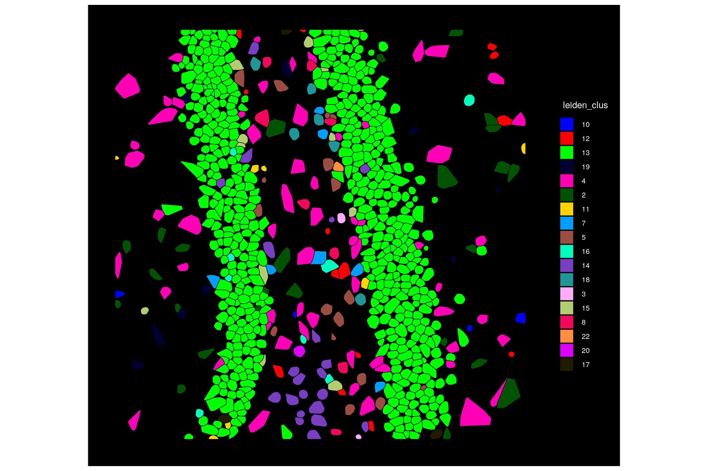
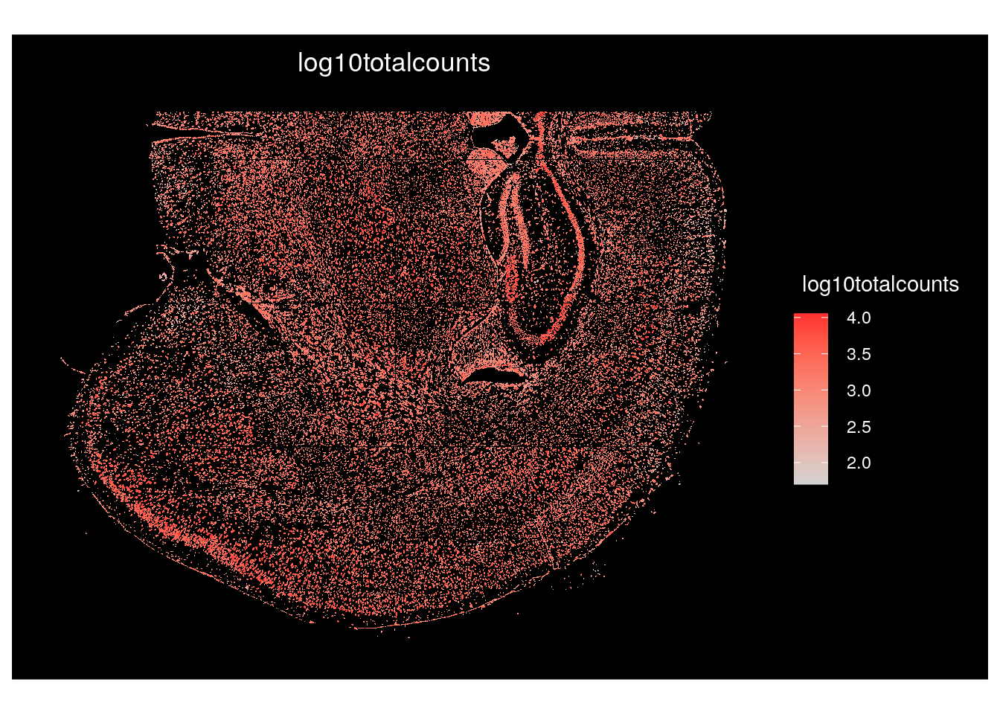
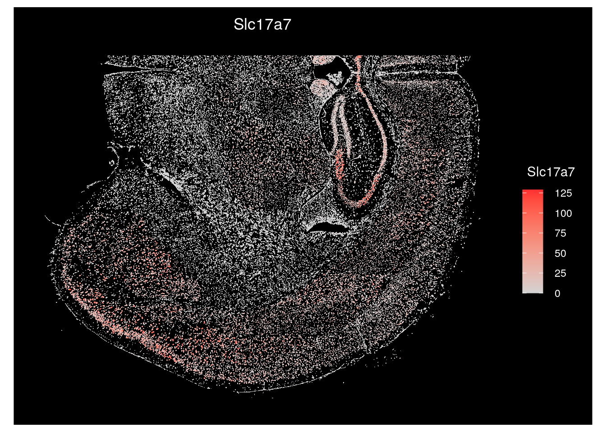
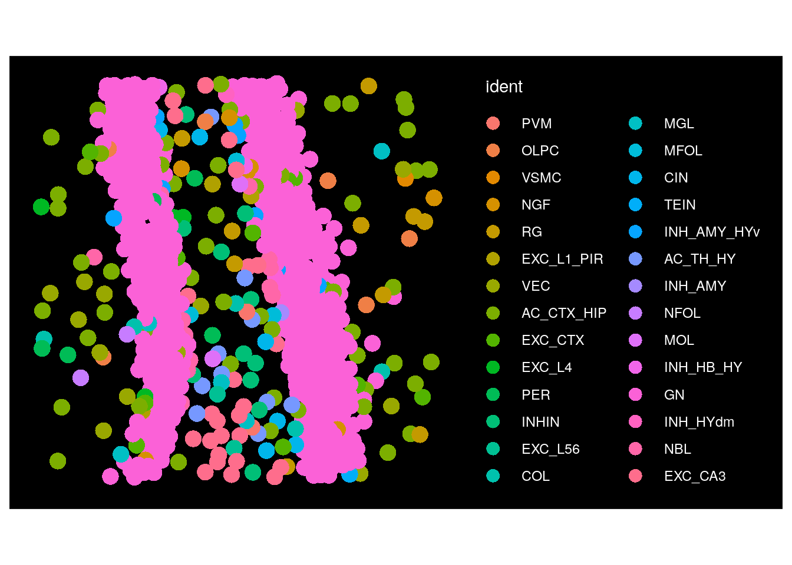
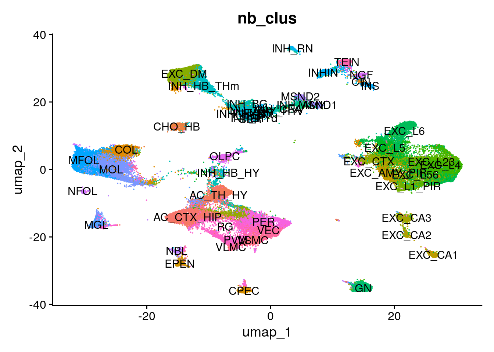
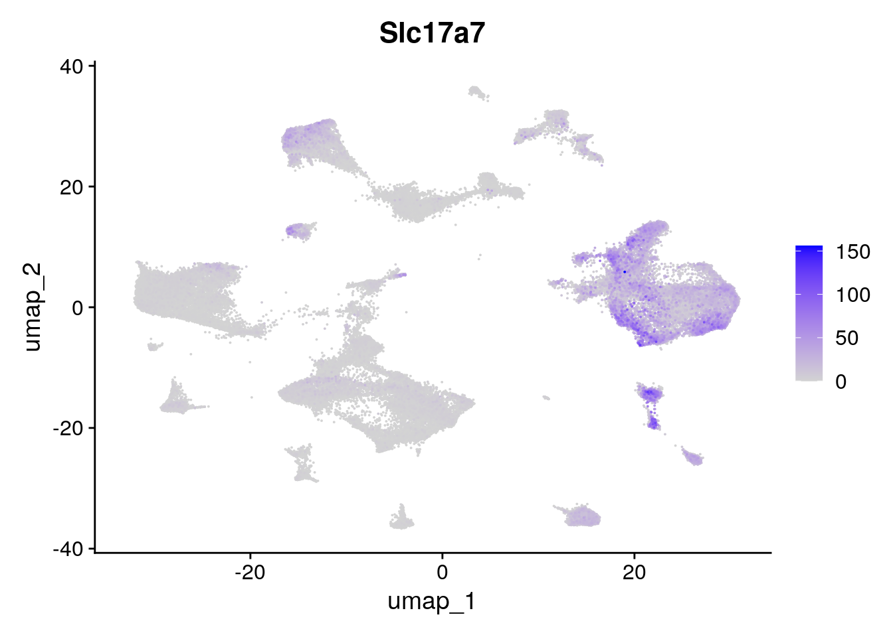

![]()
library(Seurat)
library(ggplot2)1 Introduction
One of the most exciting aspects of CosMx™ Spatial Molecular Imager (SMI) data is the ability to directly observe gene expression in its spatial context at the single cell level. This is a great technological leap from previous single cell transcriptomics methods that lost spatial context while retrieving cells. For analysts looking to perform spatial data analysis, the Seurat R package has continually added features to support CosMx data. Readers are encouraged to take a look at previous vignettes by the Seurat group (Spatial Vignette and Clustering Tutorial) as well as blog posts we’ve provided previously (scratch space). The blog post herein supplements these and provides you with some of the plotting configurations we find most helpful as you explore your CosMx data. This vignette does not cover analysis of data in Seurat but rather tries to address frequently asked questions we’ve received from customers on getting started with their data in Seurat.
For this vignette, we use a Seurat object made from the mouse brain public data set and assembled in the structure used by the Technology Access Program (TAP); similar outputs are available from the AtoMx™ Spatial Informatics Portal (SIP). To download raw data for this dataset, go here.
Like other items in our CosMx Analysis Scratch Space, the usual caveats and license applies. This post will show you how to:
2 Data Loading
Here we start from a Seurat object containing CosMx data and analysis stored in an rds file. To start from raw data instead, see the Seurat Spatial Vignette above.
Note
Many of the below functions require that you are working with Seurat v5 and may not work in earlier versions. Additionally, if you are exporting a Seurat object from AtoMx (v1.3+), be sure to export the Seurat object with polygon coordinates and transcripts included to access all of the functionality below.
First, load needed libraries:
Adjust globals option to avoid an error exceeding max allowed size. We’ve found this is necessary even with relatively small CosMx datasets (30 - 40 FOVs).
options(future.globals.maxSize = 8000 * 1024^2)Load in the Seurat object, available on Box.com here.
seu.obj <- readRDS("seurat_object.Rds")3 Data Structure
Here we’ll show where various key data are stored in the Seurat object.
# Cell metadata
head(seu.obj@meta.data) orig.ident nCount_Nanostring nFeature_Nanostring cell_ID
Run1000.S1.Half_1_1 SeuratProject 216 95 c_2_1_1
Run1000.S1.Half_2_1 SeuratProject 325 118 c_2_1_2
Run1000.S1.Half_3_1 SeuratProject 503 284 c_2_1_3
Run1000.S1.Half_4_1 SeuratProject 1085 329 c_2_1_4
Run1000.S1.Half_5_1 SeuratProject 935 349 c_2_1_5
Run1000.S1.Half_6_1 SeuratProject 1705 487 c_2_1_6
fov Area AspectRatio Width Height Mean.Histone Max.Histone
Run1000.S1.Half_1_1 1 6073 0.47 66 141 7095 42463
Run1000.S1.Half_2_1 1 5675 0.72 101 140 9220 39045
Run1000.S1.Half_3_1 1 12896 1.26 153 121 16993 45967
Run1000.S1.Half_4_1 1 8234 0.51 81 160 12720 31967
Run1000.S1.Half_5_1 1 9852 0.88 117 133 11177 38479
Run1000.S1.Half_6_1 1 13372 0.90 171 191 6009 17648
Mean.Blank Max.Blank Mean.rRNA Max.rRNA Mean.GFAP Max.GFAP
Run1000.S1.Half_1_1 70 4044 376 2871 42 3313
Run1000.S1.Half_2_1 82 296 642 1486 36 527
Run1000.S1.Half_3_1 78 1652 109 1538 37 1797
Run1000.S1.Half_4_1 121 3074 664 3284 71 3625
Run1000.S1.Half_5_1 99 3173 444 2946 82 2957
Run1000.S1.Half_6_1 215 2482 687 2429 2775 35102
Mean.DAPI Max.DAPI Run_name Slide_name ISH.concentration
Run1000.S1.Half_1_1 65 233 Run1000 Run1000_S1 1nM
Run1000.S1.Half_2_1 88 287 Run1000 Run1000_S1 1nM
Run1000.S1.Half_3_1 35 249 Run1000 Run1000_S1 1nM
Run1000.S1.Half_4_1 219 540 Run1000 Run1000_S1 1nM
Run1000.S1.Half_5_1 251 628 Run1000 Run1000_S1 1nM
Run1000.S1.Half_6_1 255 702 Run1000 Run1000_S1 1nM
Beta tissue slide_ID_numeric Run_Tissue_name
Run1000.S1.Half_1_1 12 Half 2 Run1000_S1_Half
Run1000.S1.Half_2_1 12 Half 2 Run1000_S1_Half
Run1000.S1.Half_3_1 12 Half 2 Run1000_S1_Half
Run1000.S1.Half_4_1 12 Half 2 Run1000_S1_Half
Run1000.S1.Half_5_1 12 Half 2 Run1000_S1_Half
Run1000.S1.Half_6_1 12 Half 2 Run1000_S1_Half
log10totalcounts IFcolor nb_clus leiden_clus
Run1000.S1.Half_1_1 2.334454 #BC077CFF PVM 2
Run1000.S1.Half_2_1 2.511883 #FF06A1FF VLMC 2
Run1000.S1.Half_3_1 2.705008 #3706FFFF OLPC 19
Run1000.S1.Half_4_1 3.035430 #FF0CDEFF VLMC 2
Run1000.S1.Half_5_1 2.970347 #DE0DC3FF VSMC 2
Run1000.S1.Half_6_1 3.231470 #FFFF69FF NGF 8
nb_clus_final id
Run1000.S1.Half_1_1 VLMC Run1000.S1.Half_1_1
Run1000.S1.Half_2_1 VLMC Run1000.S1.Half_2_1
Run1000.S1.Half_3_1 OLPC Run1000.S1.Half_3_1
Run1000.S1.Half_4_1 VLMC Run1000.S1.Half_4_1
Run1000.S1.Half_5_1 VSMC Run1000.S1.Half_5_1
Run1000.S1.Half_6_1 NGF Run1000.S1.Half_6_1# Transcript counts. Here, transcript counts are in the 'Nanostring' assay but in other objects they may be stored in an 'RNA' assay.
seu.obj@assays$Nanostring$counts[1:5, 1:5]Loading required package: Matrix5 x 5 sparse Matrix of class "dgCMatrix"
Run1000.S1.Half_1_1 Run1000.S1.Half_2_1 Run1000.S1.Half_3_1
Slc6a1 . . 1
Cd109 . . .
Ldha . . 1
Aldoc . . 2
Drd1 . . .
Run1000.S1.Half_4_1 Run1000.S1.Half_5_1
Slc6a1 1 .
Cd109 . .
Ldha 1 2
Aldoc . 2
Drd1 . .# UMAP positions
seu.obj@reductions$umap@cell.embeddings[1:10,] umap_1 umap_2
Run1000.S1.Half_1_1 -6.179202 -22.688357
Run1000.S1.Half_2_1 -6.470077 -23.498900
Run1000.S1.Half_3_1 -7.297677 4.227824
Run1000.S1.Half_4_1 -6.037831 -23.252535
Run1000.S1.Half_5_1 -2.250786 -21.083180
Run1000.S1.Half_6_1 14.308562 27.765420
Run1000.S1.Half_7_1 -6.235466 -22.308980
Run1000.S1.Half_8_1 -6.485635 -22.782622
Run1000.S1.Half_9_1 -7.263406 -21.322018
Run1000.S1.Half_10_1 -7.601895 4.258457# Image names. Each slide is stored as a separate image within the object.
Images(seu.obj)[1] "Run1000.S1.Half" "Run5642.S3.Quarter"# Positions in space, here shown for one image / slide
seu.obj@images[[Images(seu.obj)[1]]]$centroids@coords[1:10,] # In this object, this is equivalent to: seu.obj@images$Run1000.S1.Half$centroids@coords[1:10,] x y
[1,] -494161.3 10541
[2,] -494201.3 10413
[3,] -496227.3 10339
[4,] -494275.3 10083
[5,] -494221.3 9981
[6,] -494216.3 9776
[7,] -494375.3 9591
[8,] -494697.3 9149
[9,] -494748.3 8939
[10,] -494669.3 87994 Plot data in space
Within the Seurat object, each slide is stored as a separate ‘image’ or ‘fov’. This is an unfortunate naming convention difference between CosMx nomenclature and the Seurat package. What Seurat refers to as an ‘fov’ is what NanoString refers to as a slide. When plotting cells in space, you need to specify the Seurat ‘fov’ to plot, and this is equivalent to choosing which CosMx slide to plot.
Plot all cells on one slide in space, coloring by cell type.
# Get name of the first image
image1 <- Images(seu.obj)[1]
# Plot all cells.
# We recommend setting the border color to 'NA' as the default 'white' often masks all cells when zoomed out, leading to a fully white plot.
ImageDimPlot(seu.obj, fov = image1, axes = TRUE, border.color = NA)
Plot the location of individual transcripts with the ‘molecules’ option.
ImageDimPlot(seu.obj,
fov = Images(seu.obj)[1],
border.color = "black",
alpha = 0.5, # Reduce alpha of cell fills to better visualize the overlaying molcules
molecules = c("Slc17a7", "Gad1", "Plp1"),
mols.size = 0.2,
nmols = 100000, # Set the total number of molecules to visualize
axes = FALSE)
Plot one CosMx FOV. To do this, we set the cells we’d like to plot to be all those in our target FOV. A similar strategy could be used to plot a subset of FOVs or a subset of cells of interest.
ImageDimPlot(seu.obj,
fov = Images(seu.obj)[1],
border.color = "black",
cells = row.names(seu.obj@meta.data)[which(seu.obj@meta.data$fov == 99)])
By default, cells are colored by the ‘Identity’ set in the Seurat object. We can change this by selecting another column to color by. Here we show coloring by leiden cluster, which we treat as a factor rather than an integer.
# Check the default identities
head(Idents(seu.obj))
# Plot by leiden cluster using the 'group.by' option
ImageDimPlot(seu.obj,
fov = Images(seu.obj)[1],
border.color = "black",
group.by = "leiden_clus",
cols = "glasbey", # Option to use a different palette for cell colors
cells = row.names(seu.obj@meta.data)[which(seu.obj@meta.data$fov == 99)])
To color cells by a continuous value, such as the log10totalcounts, or by the expression of a transcript of interest, such as Slc17a7, we use the function ‘ImageFeaturePlot’.
# Color cells by log10totalcounts
ImageFeaturePlot(seu.obj,
fov = Images(seu.obj)[1],
border.color = NA,
features = "log10totalcounts")
# Color cells by the expression of a gene of interest, Slc17a7
ImageFeaturePlot(seu.obj,
fov = Images(seu.obj)[1],
border.color = NA,
features = "Slc17a7")
Seurat can plot cells with either cell shapes shown (‘segmentation’) or with a single point at the center of where they’re located (‘centroids’). Here we show the switch to plotting centroids for one FOV.
# Check what the current default boundary is
DefaultBoundary(seu.obj@images[[Images(seu.obj)[1]]])
# Change the default boundaries for the first slide
DefaultBoundary(seu.obj@images[[Images(seu.obj)[1]]]) <- "centroids"
# Plot one FOV from this slide. Note that cell shapes are no longer shown
ImageDimPlot(seu.obj,
fov = Images(seu.obj)[1],
size = 5,
shuffle.cols = TRUE, # Option to randomly shuffle colors within the palette
cells = row.names(seu.obj@meta.data)[which(seu.obj@meta.data$fov == 99)])
5 Dimension reduction plots
The CosMx Seurat object contains coordinates for each cell for UMAP dimensional reduction.
Here, we color cells by cell type and overlay cell type labels.
DimPlot(seu.obj,
group.by = "nb_clus",
label = TRUE) +
theme(legend.position = "none") # Suppress the legend since labels are plotted on top of UMAP
Here, we color cells by a continuous value, using transcript expression for a transcript of interest.
FeaturePlot(seu.obj,
features = "Slc17a7",
order = TRUE) # plots cells in order of expression
6 Conclusions
This vignette serves as an introduction to exploring CosMx data in Seurat, with a primary focus on visualization. Mix and match the functions and options from above to generate new customized visualizations with your data. Once you’re comfortable visualizing your spatial data, you may want to proceed to refining your cell typing, performing differential expression, finding spatially correlated genes, or countless other analysis paths.